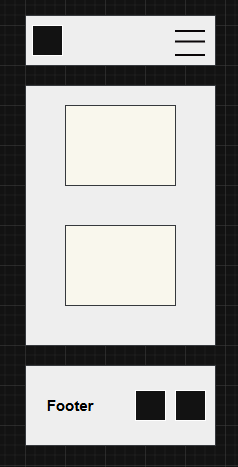
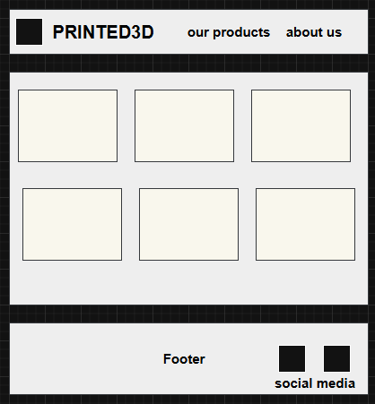

Site Name
Printed3D
The site name “Printed3D” was selected because it clearly represents a small business dedicated to selling 3D-printed products. The name is short, easy to remember, and directly related to the service offered.
Optional domain availability: printed-3d.org
Site Purpose
The purpose of this website is to sell 3D-printed LDS sculptures such as temples and faith-inspired decorative pieces. The site will showcase available products, allow customers to request custom orders, and provide contact and ordering information.
Scenarios
- What 3D-printed LDS temple models are available for purchase?
- Can I request a custom dedication or personalized design for a sculpture?
- How can I contact the business to place a special order?
Color Scheme
The following colors will be used throughout the website:
- Primary Color (#104799): Used for headers, navigation, and footer.
- Secondary Color (#00c3ff): Used for accents, buttons, and highlights.
- Background Color (#f9f9f9): Used for page backgrounds.
Typography
- Roboto: Used for headings, paragraphs, and navigation text. This font was chosen for its clean, modern appearance and readability.
Wireframes
Mobile View

Desktop View
